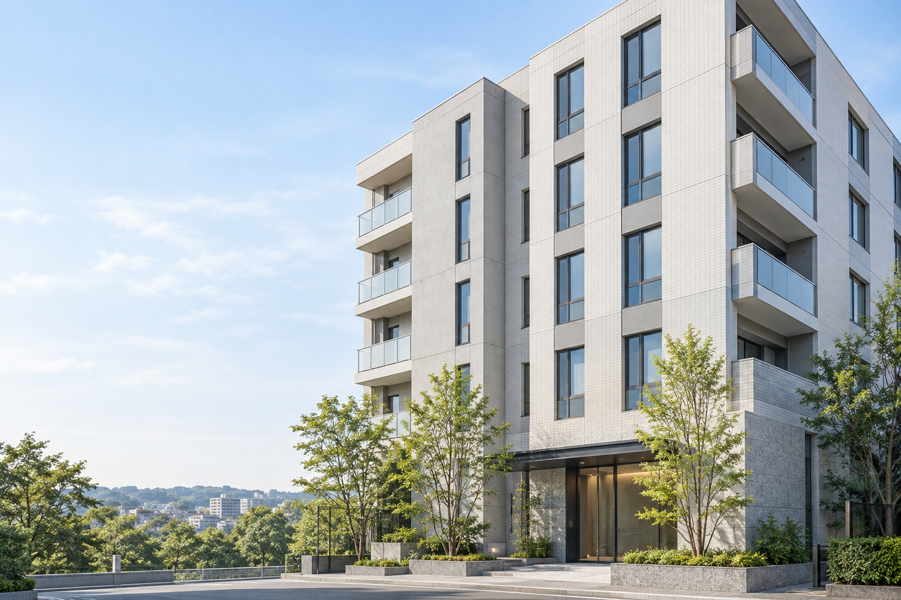

01 / EXTERIOR REPAIR
外壁修繕工事
外壁の施工前と施工後をご覧いただけます。

建物イメージTOMOKEN / EXTERIOR & RENOVATION
確かな技術と誠実な施工で、
安心・安全な建物を支え続けます。
大阪府東大阪市から、近畿一円へ。
01 / OUR WORKS
施工前と施工後を並べてご紹介します。
気になる写真をタップすると、大きくご覧いただけます。
03 / OUR MESSAGE
株式会社友建は、大阪府を拠点に防水工事・左官工事・タイル工事・外壁工事全般を手掛けています。
確かな技術と誠実な施工で、お客様の大切な建物の価値を守り続けてまいります。
安全・品質・信頼を第一に、丁寧な仕事を積み重ねてまいります。
株式会社 友建 代表取締役山岡 友尚
05 / INFORMATION
大阪府を中心に近畿一円に対応しています。工事場所を添えてお問い合わせください。
9:00〜17:00です。日曜日・祝日は定休日です。メールは24時間受け付けています。
工事場所、気になる箇所、ご希望の工事内容、連絡先をお知らせください。写真がある場合は、メールに添付していただくと状況が伝わりやすくなります。
06 / CONTACT
外壁・防水・各種工事のご相談は、
お電話またはメールでお問い合わせください。
メールには「工事場所・ご相談内容・お名前・連絡先」をご記入ください。
07 / ACCESS
〒578-0911 大阪府東大阪市中新開2丁目13番16号
コムプラザ久宝A号